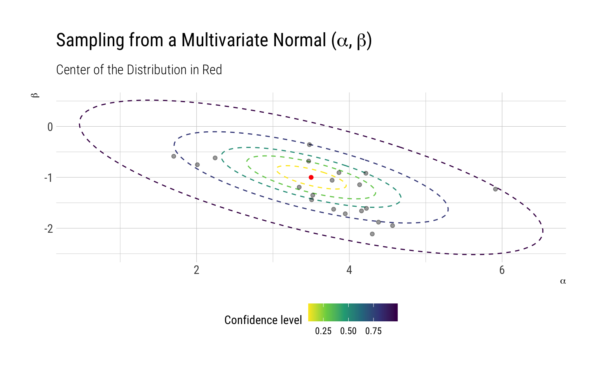
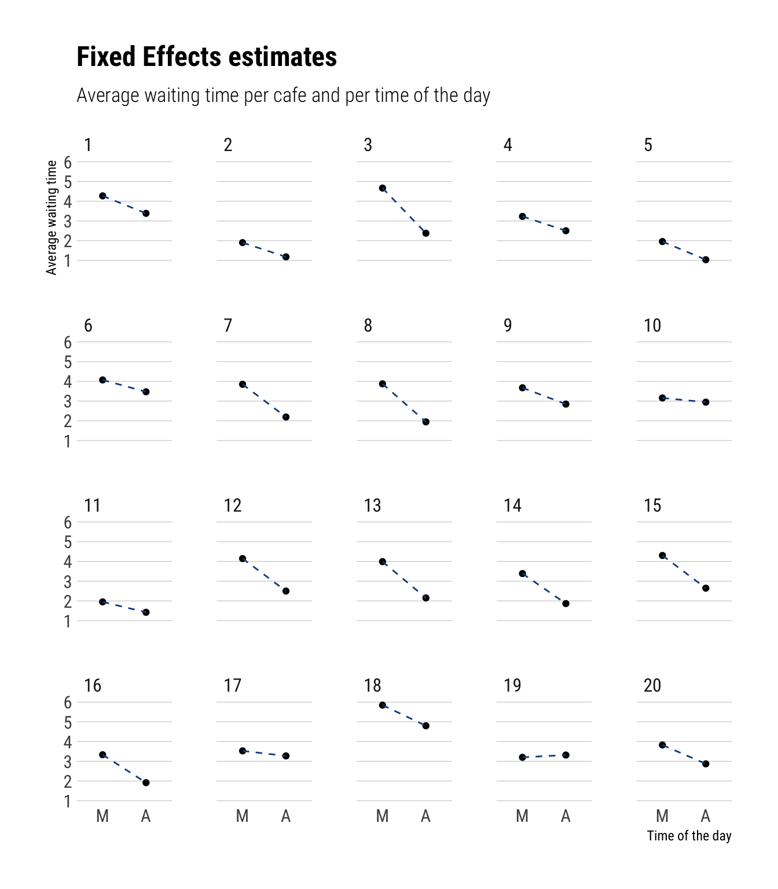
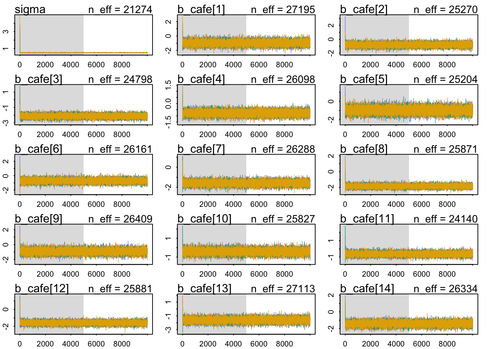
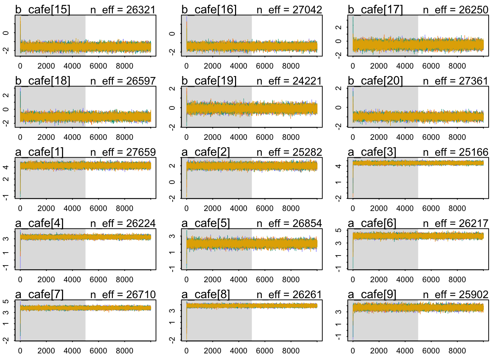
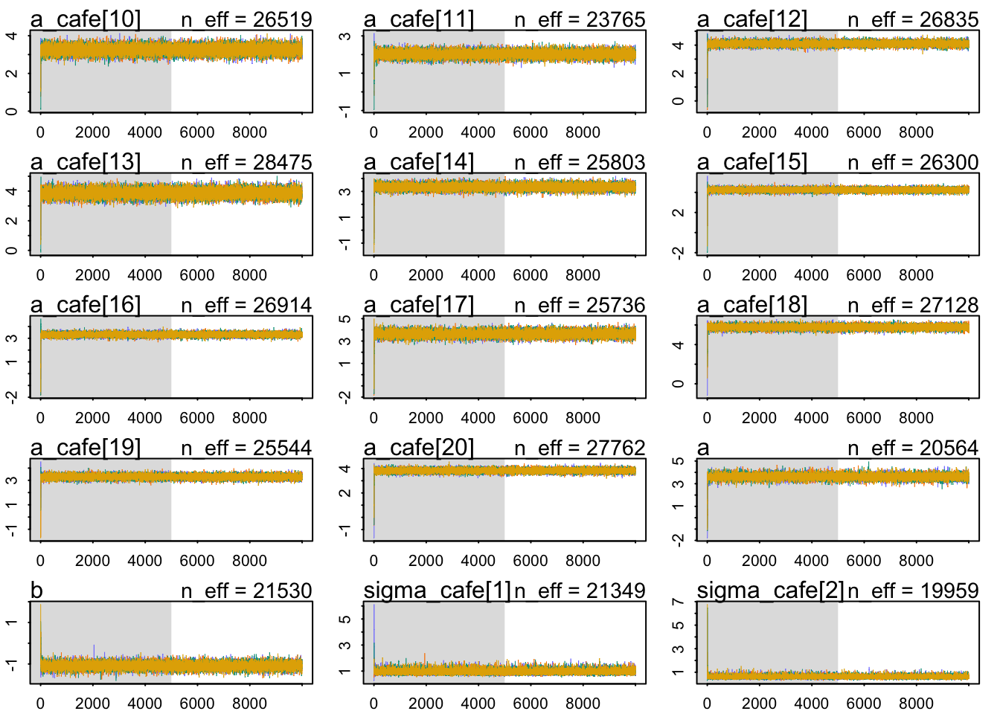
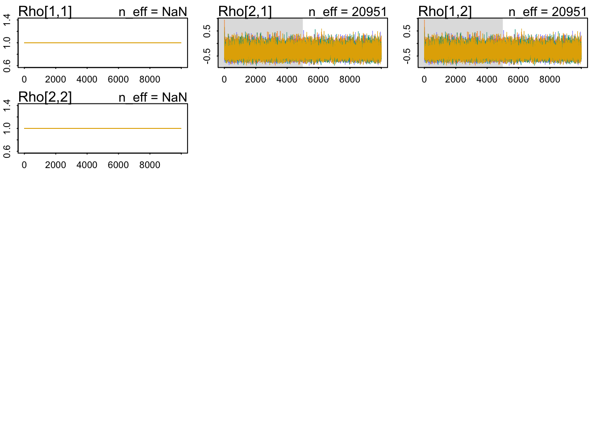
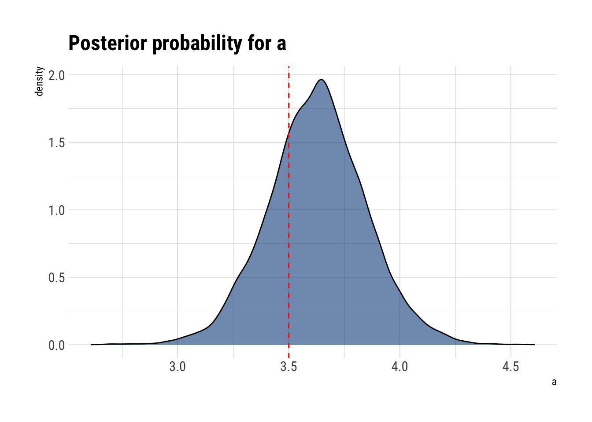
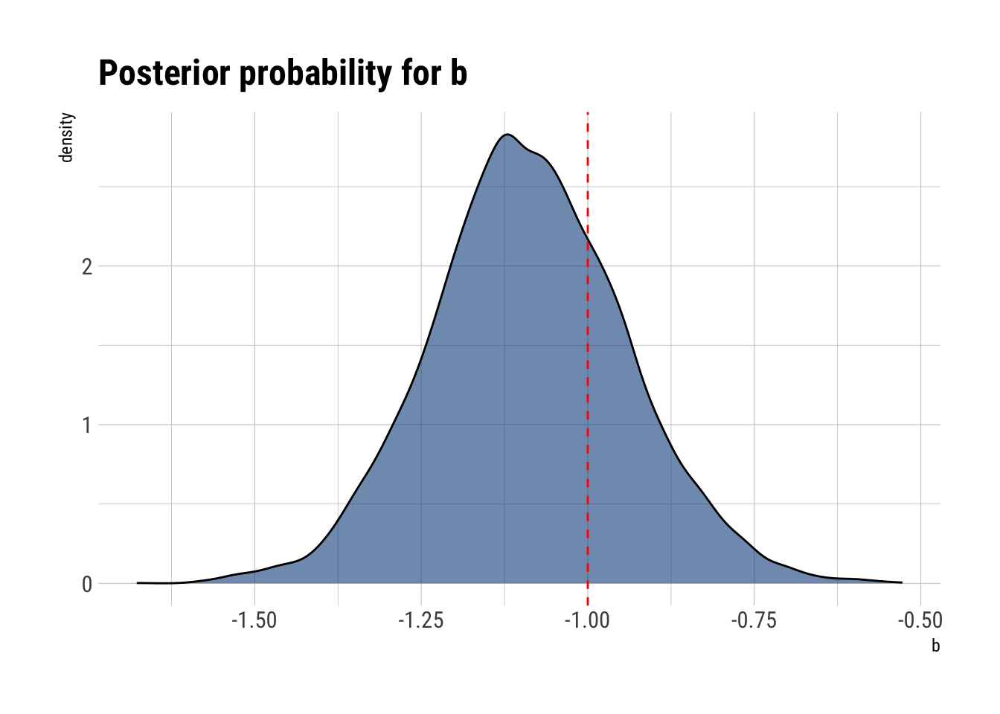
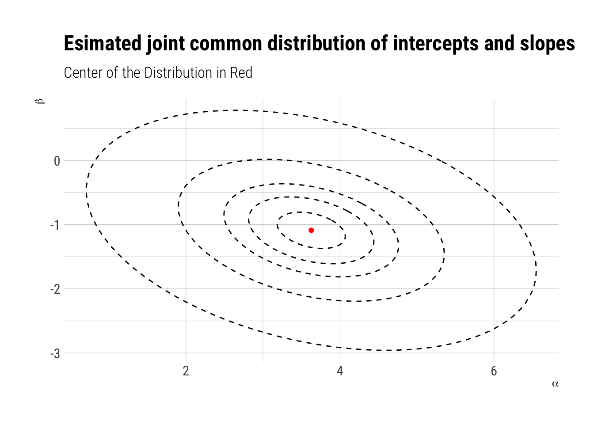
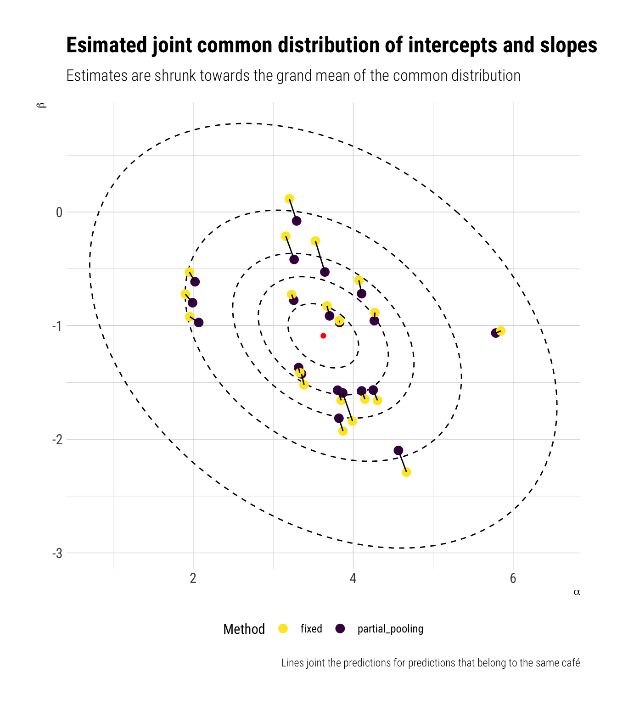

Statistical Rethinking is a fabulous course on Bayesian Statistics (and much more). By following simulations in the book, I recently tried to understand why pooling is the process and shrinkage is the result. In this post, I’ll try to do the same for a model where we pool across intercepts and slopes. That is, we will posit a multivariate common distribution for both intercept and slopes to impose adaptive regularization on our predictions.
The model
In the book, Richard proposes the following model for the morning and afternoon waiting times at different cafés.
\[ W_i \sim Normal(\mu, \sigma) \]
\[ \mu_i = \alpha_{ café_{[i]} } + \beta_{ café_{[i]} } A_i \] Intuitively, we expect the waiting time at mornings to be longer than the afternoon waiting times. Therefore, we expect a negative \(\beta\). However, the interesting part is that each café gets its own pair of parameters. That is what multilevel models are, after all:
[Multilevel models] are massive interaction machines. They allow every unit in the data to have its own unique response to any treatment… while also improving estimates via pooling.
That is, each café has its own average waiting time and slope for the afternoon (\(A_i\)). We could, after all, perform pooling independently: we would model one common distribution for the intercepts and one common distribution for the slopes. Note, however, that it would imply that knowing the intercept does not help us to predict the slope. A strong assumption that, in this case, it’s wrong: if a café has no lines neither in the morning, it won’t have lines in the afternoon: knowing the average waiting time in the morning(the intercept) adjusts our expectations for the waiting time in the afternoon (slope). There’s information that can and should be pooled across parameter types. Therefore, we are better off by setting up a joint common distribution for both the intercepts and slopes, which means modeling their covariance.
\[ \begin{bmatrix} \alpha_{café_j} \\ \beta_{cafe_j} \end{bmatrix} = MVNormal ( \begin{bmatrix} \alpha \\ \beta \end{bmatrix} , S)\]
Where \(S\) will be the var-cov matrix for the joint common distribution of intercepts and slopes. Intuitively, if the absolute value of the covariance is large, shrinking in one dimension (intercept) will lead to shrinking in the other dimension (slope).
Simulating the dataset
The joint distribution
Remember that “priors are not ontology, but epistemology”. Therefore, we never include the priors on our simulations. Let’s begin by setting up the parameters of the common joint distribution of intercepts and slopes.
We then construct the var-cov matrix:
[,1] [,2]
[1,] 1.00 -0.35
[2,] -0.35 0.25Simulate for each cafe
num [1:20, 1:2] 4.22 2.01 4.57 3.34 1.7 ...
- attr(*, "dimnames")=List of 2
..$ : NULL
..$ : NULLThat is, for each of the cafés we have one intercept and one slope. Let’s check how our simulated intercepts and slopes fit in the overall joint distribution:

The points that lie in the farthest ellipses are the “outliers”. Note that most of the samples surround the center of the distribution.
Simulate observations
Once we have an \(\alpha, \beta\) for each café, we can simulate the waiting times for each of them:
# A tibble: 20 × 2
# Groups: cafe_ids [20]
cafe_ids n
<int> <int>
1 1 6
2 2 10
3 3 16
4 4 20
5 5 6
6 6 10
7 7 16
8 8 20
9 9 6
10 10 10
11 11 16
12 12 20
13 13 6
14 14 10
15 15 16
16 16 20
17 17 6
18 18 10
19 19 16
20 20 20Now, we are ready to simulate:
Rows: 260
Columns: 3
Rowwise: cafe_ids
$ cafe_ids <int> 1, 1, 1, 1, 1, 1, 2, 2, 2, 2, 2, 2, 2, 2, 2, 2, 3, 3, 3, 3, …
$ afternoon <int> 0, 1, 0, 1, 0, 1, 0, 1, 0, 1, 0, 1, 0, 1, 0, 1, 0, 1, 0, 1, …
$ wait <dbl> 3.9678929, 3.8571978, 4.7278755, 2.7610133, 4.1194827, 3.543…In Richard’s words:
Exactly the sort of data that is well-suited to a varying slopes model. There are multiple clusters in the data. These are the cafés. And each cluster is observed under differened conditions. So it’s possible to estimate both an individual intercept for each cluster, as well as an individua slope.
Fixed effects: Maximal Overfit
When we do not allow any pooling at all, we maximally overfit. The prediction for both afternoon and morning, for each café, will be the observed mean at each of the times.

Partial Pooling: Multilevel model
Instead of ignoring the rest of the cafes when doing our predictions, let’s pool the information across cafes and across parameter types. To do so, let’s finish setting up the model that we had at the beginning:
\[ W_i \sim Normal(\mu, \sigma) \]
\[ \mu_i = \alpha_{ café_{[i]} } + \beta_{ café_{[i]} } A_i \]
\[ \begin{bmatrix} \alpha_{café_j} \\ \beta_{cafe_j} \end{bmatrix} = MVNormal ( \begin{bmatrix} \alpha \\ \beta \end{bmatrix} , S)\]
The only thing left is to posit priors for the parameters. First, we write the var-cov matrix thus:
\[ S = \begin{bmatrix} \sigma_{\alpha} \ 0 \\ 0 \ \sigma_{\beta} \end{bmatrix} R \begin{bmatrix} \sigma_{\alpha} \ 0 \\ 0 \ \sigma_{\beta} \end{bmatrix} \]
We do this to set up the prior for the correlation matrix thus:
\[ R \sim \text{LKJcorr}(2) \]
The rest will be traditional priors. Let’s focus for a second on the LKJcorr.
LKJcorr interlude
For our purposes, what we need to do is to understand how our prior changes with the parameter of the distribution \(\eta\):
NULLFit the model
Finally, we are ready to fit our partial pooling model.
Running MCMC with 4 parallel chains, with 1 thread(s) per chain...
Chain 1 Iteration: 1 / 10000 [ 0%] (Warmup)
Chain 1 Iteration: 100 / 10000 [ 1%] (Warmup)
Chain 2 Iteration: 1 / 10000 [ 0%] (Warmup)
Chain 2 Iteration: 100 / 10000 [ 1%] (Warmup)
Chain 3 Iteration: 1 / 10000 [ 0%] (Warmup)
Chain 3 Iteration: 100 / 10000 [ 1%] (Warmup)
Chain 4 Iteration: 1 / 10000 [ 0%] (Warmup)
Chain 4 Iteration: 100 / 10000 [ 1%] (Warmup)
Chain 1 Iteration: 200 / 10000 [ 2%] (Warmup)
Chain 1 Iteration: 300 / 10000 [ 3%] (Warmup)
Chain 2 Iteration: 200 / 10000 [ 2%] (Warmup)
Chain 2 Iteration: 300 / 10000 [ 3%] (Warmup)
Chain 3 Iteration: 200 / 10000 [ 2%] (Warmup)
Chain 3 Iteration: 300 / 10000 [ 3%] (Warmup)
Chain 4 Iteration: 200 / 10000 [ 2%] (Warmup)
Chain 4 Iteration: 300 / 10000 [ 3%] (Warmup)
Chain 1 Iteration: 400 / 10000 [ 4%] (Warmup)
Chain 2 Iteration: 400 / 10000 [ 4%] (Warmup)
Chain 1 Iteration: 500 / 10000 [ 5%] (Warmup)
Chain 2 Iteration: 500 / 10000 [ 5%] (Warmup)
Chain 3 Iteration: 400 / 10000 [ 4%] (Warmup)
Chain 3 Iteration: 500 / 10000 [ 5%] (Warmup)
Chain 4 Iteration: 400 / 10000 [ 4%] (Warmup)
Chain 4 Iteration: 500 / 10000 [ 5%] (Warmup)
Chain 1 Iteration: 600 / 10000 [ 6%] (Warmup)
Chain 1 Iteration: 700 / 10000 [ 7%] (Warmup)
Chain 2 Iteration: 600 / 10000 [ 6%] (Warmup)
Chain 3 Iteration: 600 / 10000 [ 6%] (Warmup)
Chain 4 Iteration: 600 / 10000 [ 6%] (Warmup)
Chain 1 Iteration: 800 / 10000 [ 8%] (Warmup)
Chain 2 Iteration: 700 / 10000 [ 7%] (Warmup)
Chain 2 Iteration: 800 / 10000 [ 8%] (Warmup)
Chain 3 Iteration: 700 / 10000 [ 7%] (Warmup)
Chain 3 Iteration: 800 / 10000 [ 8%] (Warmup)
Chain 4 Iteration: 700 / 10000 [ 7%] (Warmup)
Chain 1 Iteration: 900 / 10000 [ 9%] (Warmup)
Chain 2 Iteration: 900 / 10000 [ 9%] (Warmup)
Chain 3 Iteration: 900 / 10000 [ 9%] (Warmup)
Chain 4 Iteration: 800 / 10000 [ 8%] (Warmup)
Chain 1 Iteration: 1000 / 10000 [ 10%] (Warmup)
Chain 1 Iteration: 1100 / 10000 [ 11%] (Warmup)
Chain 2 Iteration: 1000 / 10000 [ 10%] (Warmup)
Chain 3 Iteration: 1000 / 10000 [ 10%] (Warmup)
Chain 4 Iteration: 900 / 10000 [ 9%] (Warmup)
Chain 4 Iteration: 1000 / 10000 [ 10%] (Warmup)
Chain 1 Iteration: 1200 / 10000 [ 12%] (Warmup)
Chain 2 Iteration: 1100 / 10000 [ 11%] (Warmup)
Chain 3 Iteration: 1100 / 10000 [ 11%] (Warmup)
Chain 3 Iteration: 1200 / 10000 [ 12%] (Warmup)
Chain 4 Iteration: 1100 / 10000 [ 11%] (Warmup)
Chain 1 Iteration: 1300 / 10000 [ 13%] (Warmup)
Chain 2 Iteration: 1200 / 10000 [ 12%] (Warmup)
Chain 2 Iteration: 1300 / 10000 [ 13%] (Warmup)
Chain 3 Iteration: 1300 / 10000 [ 13%] (Warmup)
Chain 4 Iteration: 1200 / 10000 [ 12%] (Warmup)
Chain 1 Iteration: 1400 / 10000 [ 14%] (Warmup)
Chain 1 Iteration: 1500 / 10000 [ 15%] (Warmup)
Chain 2 Iteration: 1400 / 10000 [ 14%] (Warmup)
Chain 3 Iteration: 1400 / 10000 [ 14%] (Warmup)
Chain 4 Iteration: 1300 / 10000 [ 13%] (Warmup)
Chain 4 Iteration: 1400 / 10000 [ 14%] (Warmup)
Chain 1 Iteration: 1600 / 10000 [ 16%] (Warmup)
Chain 2 Iteration: 1500 / 10000 [ 15%] (Warmup)
Chain 2 Iteration: 1600 / 10000 [ 16%] (Warmup)
Chain 3 Iteration: 1500 / 10000 [ 15%] (Warmup)
Chain 3 Iteration: 1600 / 10000 [ 16%] (Warmup)
Chain 4 Iteration: 1500 / 10000 [ 15%] (Warmup)
Chain 1 Iteration: 1700 / 10000 [ 17%] (Warmup)
Chain 1 Iteration: 1800 / 10000 [ 18%] (Warmup)
Chain 2 Iteration: 1700 / 10000 [ 17%] (Warmup)
Chain 3 Iteration: 1700 / 10000 [ 17%] (Warmup)
Chain 4 Iteration: 1600 / 10000 [ 16%] (Warmup)
Chain 1 Iteration: 1900 / 10000 [ 19%] (Warmup)
Chain 2 Iteration: 1800 / 10000 [ 18%] (Warmup)
Chain 3 Iteration: 1800 / 10000 [ 18%] (Warmup)
Chain 4 Iteration: 1700 / 10000 [ 17%] (Warmup)
Chain 4 Iteration: 1800 / 10000 [ 18%] (Warmup)
Chain 1 Iteration: 2000 / 10000 [ 20%] (Warmup)
Chain 2 Iteration: 1900 / 10000 [ 19%] (Warmup)
Chain 3 Iteration: 1900 / 10000 [ 19%] (Warmup)
Chain 4 Iteration: 1900 / 10000 [ 19%] (Warmup)
Chain 1 Iteration: 2100 / 10000 [ 21%] (Warmup)
Chain 2 Iteration: 2000 / 10000 [ 20%] (Warmup)
Chain 3 Iteration: 2000 / 10000 [ 20%] (Warmup)
Chain 3 Iteration: 2100 / 10000 [ 21%] (Warmup)
Chain 4 Iteration: 2000 / 10000 [ 20%] (Warmup)
Chain 1 Iteration: 2200 / 10000 [ 22%] (Warmup)
Chain 1 Iteration: 2300 / 10000 [ 23%] (Warmup)
Chain 2 Iteration: 2100 / 10000 [ 21%] (Warmup)
Chain 2 Iteration: 2200 / 10000 [ 22%] (Warmup)
Chain 3 Iteration: 2200 / 10000 [ 22%] (Warmup)
Chain 4 Iteration: 2100 / 10000 [ 21%] (Warmup)
Chain 4 Iteration: 2200 / 10000 [ 22%] (Warmup)
Chain 1 Iteration: 2400 / 10000 [ 24%] (Warmup)
Chain 2 Iteration: 2300 / 10000 [ 23%] (Warmup)
Chain 3 Iteration: 2300 / 10000 [ 23%] (Warmup)
Chain 4 Iteration: 2300 / 10000 [ 23%] (Warmup)
Chain 1 Iteration: 2500 / 10000 [ 25%] (Warmup)
Chain 2 Iteration: 2400 / 10000 [ 24%] (Warmup)
Chain 3 Iteration: 2400 / 10000 [ 24%] (Warmup)
Chain 4 Iteration: 2400 / 10000 [ 24%] (Warmup)
Chain 1 Iteration: 2600 / 10000 [ 26%] (Warmup)
Chain 1 Iteration: 2700 / 10000 [ 27%] (Warmup)
Chain 2 Iteration: 2500 / 10000 [ 25%] (Warmup)
Chain 3 Iteration: 2500 / 10000 [ 25%] (Warmup)
Chain 4 Iteration: 2500 / 10000 [ 25%] (Warmup)
Chain 4 Iteration: 2600 / 10000 [ 26%] (Warmup)
Chain 1 Iteration: 2800 / 10000 [ 28%] (Warmup)
Chain 2 Iteration: 2600 / 10000 [ 26%] (Warmup)
Chain 2 Iteration: 2700 / 10000 [ 27%] (Warmup)
Chain 3 Iteration: 2600 / 10000 [ 26%] (Warmup)
Chain 4 Iteration: 2700 / 10000 [ 27%] (Warmup)
Chain 1 Iteration: 2900 / 10000 [ 29%] (Warmup)
Chain 2 Iteration: 2800 / 10000 [ 28%] (Warmup)
Chain 3 Iteration: 2700 / 10000 [ 27%] (Warmup)
Chain 3 Iteration: 2800 / 10000 [ 28%] (Warmup)
Chain 4 Iteration: 2800 / 10000 [ 28%] (Warmup)
Chain 1 Iteration: 3000 / 10000 [ 30%] (Warmup)
Chain 2 Iteration: 2900 / 10000 [ 29%] (Warmup)
Chain 3 Iteration: 2900 / 10000 [ 29%] (Warmup)
Chain 4 Iteration: 2900 / 10000 [ 29%] (Warmup)
Chain 4 Iteration: 3000 / 10000 [ 30%] (Warmup)
Chain 1 Iteration: 3100 / 10000 [ 31%] (Warmup)
Chain 1 Iteration: 3200 / 10000 [ 32%] (Warmup)
Chain 2 Iteration: 3000 / 10000 [ 30%] (Warmup)
Chain 2 Iteration: 3100 / 10000 [ 31%] (Warmup)
Chain 3 Iteration: 3000 / 10000 [ 30%] (Warmup)
Chain 3 Iteration: 3100 / 10000 [ 31%] (Warmup)
Chain 4 Iteration: 3100 / 10000 [ 31%] (Warmup)
Chain 1 Iteration: 3300 / 10000 [ 33%] (Warmup)
Chain 2 Iteration: 3200 / 10000 [ 32%] (Warmup)
Chain 3 Iteration: 3200 / 10000 [ 32%] (Warmup)
Chain 4 Iteration: 3200 / 10000 [ 32%] (Warmup)
Chain 4 Iteration: 3300 / 10000 [ 33%] (Warmup)
Chain 1 Iteration: 3400 / 10000 [ 34%] (Warmup)
Chain 1 Iteration: 3500 / 10000 [ 35%] (Warmup)
Chain 2 Iteration: 3300 / 10000 [ 33%] (Warmup)
Chain 2 Iteration: 3400 / 10000 [ 34%] (Warmup)
Chain 3 Iteration: 3300 / 10000 [ 33%] (Warmup)
Chain 3 Iteration: 3400 / 10000 [ 34%] (Warmup)
Chain 4 Iteration: 3400 / 10000 [ 34%] (Warmup)
Chain 1 Iteration: 3600 / 10000 [ 36%] (Warmup)
Chain 2 Iteration: 3500 / 10000 [ 35%] (Warmup)
Chain 3 Iteration: 3500 / 10000 [ 35%] (Warmup)
Chain 4 Iteration: 3500 / 10000 [ 35%] (Warmup)
Chain 1 Iteration: 3700 / 10000 [ 37%] (Warmup)
Chain 2 Iteration: 3600 / 10000 [ 36%] (Warmup)
Chain 3 Iteration: 3600 / 10000 [ 36%] (Warmup)
Chain 4 Iteration: 3600 / 10000 [ 36%] (Warmup)
Chain 1 Iteration: 3800 / 10000 [ 38%] (Warmup)
Chain 1 Iteration: 3900 / 10000 [ 39%] (Warmup)
Chain 2 Iteration: 3700 / 10000 [ 37%] (Warmup)
Chain 3 Iteration: 3700 / 10000 [ 37%] (Warmup)
Chain 4 Iteration: 3700 / 10000 [ 37%] (Warmup)
Chain 1 Iteration: 4000 / 10000 [ 40%] (Warmup)
Chain 2 Iteration: 3800 / 10000 [ 38%] (Warmup)
Chain 2 Iteration: 3900 / 10000 [ 39%] (Warmup)
Chain 3 Iteration: 3800 / 10000 [ 38%] (Warmup)
Chain 3 Iteration: 3900 / 10000 [ 39%] (Warmup)
Chain 4 Iteration: 3800 / 10000 [ 38%] (Warmup)
Chain 4 Iteration: 3900 / 10000 [ 39%] (Warmup)
Chain 1 Iteration: 4100 / 10000 [ 41%] (Warmup)
Chain 2 Iteration: 4000 / 10000 [ 40%] (Warmup)
Chain 3 Iteration: 4000 / 10000 [ 40%] (Warmup)
Chain 4 Iteration: 4000 / 10000 [ 40%] (Warmup)
Chain 1 Iteration: 4200 / 10000 [ 42%] (Warmup)
Chain 1 Iteration: 4300 / 10000 [ 43%] (Warmup)
Chain 2 Iteration: 4100 / 10000 [ 41%] (Warmup)
Chain 2 Iteration: 4200 / 10000 [ 42%] (Warmup)
Chain 3 Iteration: 4100 / 10000 [ 41%] (Warmup)
Chain 3 Iteration: 4200 / 10000 [ 42%] (Warmup)
Chain 4 Iteration: 4100 / 10000 [ 41%] (Warmup)
Chain 4 Iteration: 4200 / 10000 [ 42%] (Warmup)
Chain 1 Iteration: 4400 / 10000 [ 44%] (Warmup)
Chain 2 Iteration: 4300 / 10000 [ 43%] (Warmup)
Chain 3 Iteration: 4300 / 10000 [ 43%] (Warmup)
Chain 4 Iteration: 4300 / 10000 [ 43%] (Warmup)
Chain 1 Iteration: 4500 / 10000 [ 45%] (Warmup)
Chain 2 Iteration: 4400 / 10000 [ 44%] (Warmup)
Chain 2 Iteration: 4500 / 10000 [ 45%] (Warmup)
Chain 3 Iteration: 4400 / 10000 [ 44%] (Warmup)
Chain 3 Iteration: 4500 / 10000 [ 45%] (Warmup)
Chain 4 Iteration: 4400 / 10000 [ 44%] (Warmup)
Chain 4 Iteration: 4500 / 10000 [ 45%] (Warmup)
Chain 1 Iteration: 4600 / 10000 [ 46%] (Warmup)
Chain 1 Iteration: 4700 / 10000 [ 47%] (Warmup)
Chain 2 Iteration: 4600 / 10000 [ 46%] (Warmup)
Chain 3 Iteration: 4600 / 10000 [ 46%] (Warmup)
Chain 4 Iteration: 4600 / 10000 [ 46%] (Warmup)
Chain 1 Iteration: 4800 / 10000 [ 48%] (Warmup)
Chain 2 Iteration: 4700 / 10000 [ 47%] (Warmup)
Chain 3 Iteration: 4700 / 10000 [ 47%] (Warmup)
Chain 4 Iteration: 4700 / 10000 [ 47%] (Warmup)
Chain 4 Iteration: 4800 / 10000 [ 48%] (Warmup)
Chain 1 Iteration: 4900 / 10000 [ 49%] (Warmup)
Chain 2 Iteration: 4800 / 10000 [ 48%] (Warmup)
Chain 2 Iteration: 4900 / 10000 [ 49%] (Warmup)
Chain 3 Iteration: 4800 / 10000 [ 48%] (Warmup)
Chain 3 Iteration: 4900 / 10000 [ 49%] (Warmup)
Chain 4 Iteration: 4900 / 10000 [ 49%] (Warmup)
Chain 1 Iteration: 5000 / 10000 [ 50%] (Warmup)
Chain 1 Iteration: 5001 / 10000 [ 50%] (Sampling)
Chain 1 Iteration: 5100 / 10000 [ 51%] (Sampling)
Chain 2 Iteration: 5000 / 10000 [ 50%] (Warmup)
Chain 2 Iteration: 5001 / 10000 [ 50%] (Sampling)
Chain 3 Iteration: 5000 / 10000 [ 50%] (Warmup)
Chain 3 Iteration: 5001 / 10000 [ 50%] (Sampling)
Chain 3 Iteration: 5100 / 10000 [ 51%] (Sampling)
Chain 4 Iteration: 5000 / 10000 [ 50%] (Warmup)
Chain 4 Iteration: 5001 / 10000 [ 50%] (Sampling)
Chain 4 Iteration: 5100 / 10000 [ 51%] (Sampling)
Chain 1 Iteration: 5200 / 10000 [ 52%] (Sampling)
Chain 2 Iteration: 5100 / 10000 [ 51%] (Sampling)
Chain 2 Iteration: 5200 / 10000 [ 52%] (Sampling)
Chain 3 Iteration: 5200 / 10000 [ 52%] (Sampling)
Chain 4 Iteration: 5200 / 10000 [ 52%] (Sampling)
Chain 1 Iteration: 5300 / 10000 [ 53%] (Sampling)
Chain 1 Iteration: 5400 / 10000 [ 54%] (Sampling)
Chain 2 Iteration: 5300 / 10000 [ 53%] (Sampling)
Chain 2 Iteration: 5400 / 10000 [ 54%] (Sampling)
Chain 3 Iteration: 5300 / 10000 [ 53%] (Sampling)
Chain 3 Iteration: 5400 / 10000 [ 54%] (Sampling)
Chain 4 Iteration: 5300 / 10000 [ 53%] (Sampling)
Chain 4 Iteration: 5400 / 10000 [ 54%] (Sampling)
Chain 1 Iteration: 5500 / 10000 [ 55%] (Sampling)
Chain 2 Iteration: 5500 / 10000 [ 55%] (Sampling)
Chain 3 Iteration: 5500 / 10000 [ 55%] (Sampling)
Chain 4 Iteration: 5500 / 10000 [ 55%] (Sampling)
Chain 1 Iteration: 5600 / 10000 [ 56%] (Sampling)
Chain 2 Iteration: 5600 / 10000 [ 56%] (Sampling)
Chain 2 Iteration: 5700 / 10000 [ 57%] (Sampling)
Chain 3 Iteration: 5600 / 10000 [ 56%] (Sampling)
Chain 3 Iteration: 5700 / 10000 [ 57%] (Sampling)
Chain 4 Iteration: 5600 / 10000 [ 56%] (Sampling)
Chain 4 Iteration: 5700 / 10000 [ 57%] (Sampling)
Chain 1 Iteration: 5700 / 10000 [ 57%] (Sampling)
Chain 2 Iteration: 5800 / 10000 [ 58%] (Sampling)
Chain 3 Iteration: 5800 / 10000 [ 58%] (Sampling)
Chain 4 Iteration: 5800 / 10000 [ 58%] (Sampling)
Chain 1 Iteration: 5800 / 10000 [ 58%] (Sampling)
Chain 2 Iteration: 5900 / 10000 [ 59%] (Sampling)
Chain 3 Iteration: 5900 / 10000 [ 59%] (Sampling)
Chain 4 Iteration: 5900 / 10000 [ 59%] (Sampling)
Chain 1 Iteration: 5900 / 10000 [ 59%] (Sampling)
Chain 3 Iteration: 6000 / 10000 [ 60%] (Sampling)
Chain 4 Iteration: 6000 / 10000 [ 60%] (Sampling)
Chain 1 Iteration: 6000 / 10000 [ 60%] (Sampling)
Chain 2 Iteration: 6000 / 10000 [ 60%] (Sampling)
Chain 2 Iteration: 6100 / 10000 [ 61%] (Sampling)
Chain 3 Iteration: 6100 / 10000 [ 61%] (Sampling)
Chain 4 Iteration: 6100 / 10000 [ 61%] (Sampling)
Chain 1 Iteration: 6100 / 10000 [ 61%] (Sampling)
Chain 2 Iteration: 6200 / 10000 [ 62%] (Sampling)
Chain 3 Iteration: 6200 / 10000 [ 62%] (Sampling)
Chain 3 Iteration: 6300 / 10000 [ 63%] (Sampling)
Chain 4 Iteration: 6200 / 10000 [ 62%] (Sampling)
Chain 4 Iteration: 6300 / 10000 [ 63%] (Sampling)
Chain 1 Iteration: 6200 / 10000 [ 62%] (Sampling)
Chain 2 Iteration: 6300 / 10000 [ 63%] (Sampling)
Chain 3 Iteration: 6400 / 10000 [ 64%] (Sampling)
Chain 4 Iteration: 6400 / 10000 [ 64%] (Sampling)
Chain 1 Iteration: 6300 / 10000 [ 63%] (Sampling)
Chain 2 Iteration: 6400 / 10000 [ 64%] (Sampling)
Chain 1 Iteration: 6400 / 10000 [ 64%] (Sampling)
Chain 2 Iteration: 6500 / 10000 [ 65%] (Sampling)
Chain 3 Iteration: 6500 / 10000 [ 65%] (Sampling)
Chain 4 Iteration: 6500 / 10000 [ 65%] (Sampling)
Chain 1 Iteration: 6500 / 10000 [ 65%] (Sampling)
Chain 2 Iteration: 6600 / 10000 [ 66%] (Sampling)
Chain 2 Iteration: 6700 / 10000 [ 67%] (Sampling)
Chain 3 Iteration: 6600 / 10000 [ 66%] (Sampling)
Chain 3 Iteration: 6700 / 10000 [ 67%] (Sampling)
Chain 4 Iteration: 6600 / 10000 [ 66%] (Sampling)
Chain 4 Iteration: 6700 / 10000 [ 67%] (Sampling)
Chain 1 Iteration: 6600 / 10000 [ 66%] (Sampling)
Chain 2 Iteration: 6800 / 10000 [ 68%] (Sampling)
Chain 3 Iteration: 6800 / 10000 [ 68%] (Sampling)
Chain 4 Iteration: 6800 / 10000 [ 68%] (Sampling)
Chain 1 Iteration: 6700 / 10000 [ 67%] (Sampling)
Chain 1 Iteration: 6800 / 10000 [ 68%] (Sampling)
Chain 2 Iteration: 6900 / 10000 [ 69%] (Sampling)
Chain 3 Iteration: 6900 / 10000 [ 69%] (Sampling)
Chain 3 Iteration: 7000 / 10000 [ 70%] (Sampling)
Chain 4 Iteration: 6900 / 10000 [ 69%] (Sampling)
Chain 1 Iteration: 6900 / 10000 [ 69%] (Sampling)
Chain 2 Iteration: 7000 / 10000 [ 70%] (Sampling)
Chain 2 Iteration: 7100 / 10000 [ 71%] (Sampling)
Chain 3 Iteration: 7100 / 10000 [ 71%] (Sampling)
Chain 4 Iteration: 7000 / 10000 [ 70%] (Sampling)
Chain 4 Iteration: 7100 / 10000 [ 71%] (Sampling)
Chain 1 Iteration: 7000 / 10000 [ 70%] (Sampling)
Chain 1 Iteration: 7100 / 10000 [ 71%] (Sampling)
Chain 2 Iteration: 7200 / 10000 [ 72%] (Sampling)
Chain 3 Iteration: 7200 / 10000 [ 72%] (Sampling)
Chain 3 Iteration: 7300 / 10000 [ 73%] (Sampling)
Chain 4 Iteration: 7200 / 10000 [ 72%] (Sampling)
Chain 1 Iteration: 7200 / 10000 [ 72%] (Sampling)
Chain 2 Iteration: 7300 / 10000 [ 73%] (Sampling)
Chain 2 Iteration: 7400 / 10000 [ 74%] (Sampling)
Chain 3 Iteration: 7400 / 10000 [ 74%] (Sampling)
Chain 4 Iteration: 7300 / 10000 [ 73%] (Sampling)
Chain 1 Iteration: 7300 / 10000 [ 73%] (Sampling)
Chain 2 Iteration: 7500 / 10000 [ 75%] (Sampling)
Chain 3 Iteration: 7500 / 10000 [ 75%] (Sampling)
Chain 4 Iteration: 7400 / 10000 [ 74%] (Sampling)
Chain 4 Iteration: 7500 / 10000 [ 75%] (Sampling)
Chain 1 Iteration: 7400 / 10000 [ 74%] (Sampling)
Chain 2 Iteration: 7600 / 10000 [ 76%] (Sampling)
Chain 3 Iteration: 7600 / 10000 [ 76%] (Sampling)
Chain 4 Iteration: 7600 / 10000 [ 76%] (Sampling)
Chain 1 Iteration: 7500 / 10000 [ 75%] (Sampling)
Chain 2 Iteration: 7700 / 10000 [ 77%] (Sampling)
Chain 2 Iteration: 7800 / 10000 [ 78%] (Sampling)
Chain 3 Iteration: 7700 / 10000 [ 77%] (Sampling)
Chain 3 Iteration: 7800 / 10000 [ 78%] (Sampling)
Chain 4 Iteration: 7700 / 10000 [ 77%] (Sampling)
Chain 1 Iteration: 7600 / 10000 [ 76%] (Sampling)
Chain 2 Iteration: 7900 / 10000 [ 79%] (Sampling)
Chain 3 Iteration: 7900 / 10000 [ 79%] (Sampling)
Chain 4 Iteration: 7800 / 10000 [ 78%] (Sampling)
Chain 1 Iteration: 7700 / 10000 [ 77%] (Sampling)
Chain 1 Iteration: 7800 / 10000 [ 78%] (Sampling)
Chain 2 Iteration: 8000 / 10000 [ 80%] (Sampling)
Chain 3 Iteration: 8000 / 10000 [ 80%] (Sampling)
Chain 4 Iteration: 7900 / 10000 [ 79%] (Sampling)
Chain 4 Iteration: 8000 / 10000 [ 80%] (Sampling)
Chain 1 Iteration: 7900 / 10000 [ 79%] (Sampling)
Chain 2 Iteration: 8100 / 10000 [ 81%] (Sampling)
Chain 3 Iteration: 8100 / 10000 [ 81%] (Sampling)
Chain 3 Iteration: 8200 / 10000 [ 82%] (Sampling)
Chain 4 Iteration: 8100 / 10000 [ 81%] (Sampling)
Chain 1 Iteration: 8000 / 10000 [ 80%] (Sampling)
Chain 2 Iteration: 8200 / 10000 [ 82%] (Sampling)
Chain 2 Iteration: 8300 / 10000 [ 83%] (Sampling)
Chain 3 Iteration: 8300 / 10000 [ 83%] (Sampling)
Chain 4 Iteration: 8200 / 10000 [ 82%] (Sampling)
Chain 1 Iteration: 8100 / 10000 [ 81%] (Sampling)
Chain 2 Iteration: 8400 / 10000 [ 84%] (Sampling)
Chain 3 Iteration: 8400 / 10000 [ 84%] (Sampling)
Chain 4 Iteration: 8300 / 10000 [ 83%] (Sampling)
Chain 4 Iteration: 8400 / 10000 [ 84%] (Sampling)
Chain 1 Iteration: 8200 / 10000 [ 82%] (Sampling)
Chain 1 Iteration: 8300 / 10000 [ 83%] (Sampling)
Chain 2 Iteration: 8500 / 10000 [ 85%] (Sampling)
Chain 2 Iteration: 8600 / 10000 [ 86%] (Sampling)
Chain 3 Iteration: 8500 / 10000 [ 85%] (Sampling)
Chain 3 Iteration: 8600 / 10000 [ 86%] (Sampling)
Chain 4 Iteration: 8500 / 10000 [ 85%] (Sampling)
Chain 1 Iteration: 8400 / 10000 [ 84%] (Sampling)
Chain 2 Iteration: 8700 / 10000 [ 87%] (Sampling)
Chain 3 Iteration: 8700 / 10000 [ 87%] (Sampling)
Chain 4 Iteration: 8600 / 10000 [ 86%] (Sampling)
Chain 1 Iteration: 8500 / 10000 [ 85%] (Sampling)
Chain 2 Iteration: 8800 / 10000 [ 88%] (Sampling)
Chain 3 Iteration: 8800 / 10000 [ 88%] (Sampling)
Chain 3 Iteration: 8900 / 10000 [ 89%] (Sampling)
Chain 4 Iteration: 8700 / 10000 [ 87%] (Sampling)
Chain 4 Iteration: 8800 / 10000 [ 88%] (Sampling)
Chain 1 Iteration: 8600 / 10000 [ 86%] (Sampling)
Chain 2 Iteration: 8900 / 10000 [ 89%] (Sampling)
Chain 2 Iteration: 9000 / 10000 [ 90%] (Sampling)
Chain 3 Iteration: 9000 / 10000 [ 90%] (Sampling)
Chain 4 Iteration: 8900 / 10000 [ 89%] (Sampling)
Chain 1 Iteration: 8700 / 10000 [ 87%] (Sampling)
Chain 2 Iteration: 9100 / 10000 [ 91%] (Sampling)
Chain 3 Iteration: 9100 / 10000 [ 91%] (Sampling)
Chain 4 Iteration: 9000 / 10000 [ 90%] (Sampling)
Chain 1 Iteration: 8800 / 10000 [ 88%] (Sampling)
Chain 2 Iteration: 9200 / 10000 [ 92%] (Sampling)
Chain 3 Iteration: 9200 / 10000 [ 92%] (Sampling)
Chain 4 Iteration: 9100 / 10000 [ 91%] (Sampling)
Chain 1 Iteration: 8900 / 10000 [ 89%] (Sampling)
Chain 2 Iteration: 9300 / 10000 [ 93%] (Sampling)
Chain 3 Iteration: 9300 / 10000 [ 93%] (Sampling)
Chain 4 Iteration: 9200 / 10000 [ 92%] (Sampling)
Chain 1 Iteration: 9000 / 10000 [ 90%] (Sampling)
Chain 2 Iteration: 9400 / 10000 [ 94%] (Sampling)
Chain 3 Iteration: 9400 / 10000 [ 94%] (Sampling)
Chain 4 Iteration: 9300 / 10000 [ 93%] (Sampling)
Chain 1 Iteration: 9100 / 10000 [ 91%] (Sampling)
Chain 2 Iteration: 9500 / 10000 [ 95%] (Sampling)
Chain 3 Iteration: 9500 / 10000 [ 95%] (Sampling)
Chain 4 Iteration: 9400 / 10000 [ 94%] (Sampling)
Chain 4 Iteration: 9500 / 10000 [ 95%] (Sampling)
Chain 1 Iteration: 9200 / 10000 [ 92%] (Sampling)
Chain 2 Iteration: 9600 / 10000 [ 96%] (Sampling)
Chain 2 Iteration: 9700 / 10000 [ 97%] (Sampling)
Chain 3 Iteration: 9600 / 10000 [ 96%] (Sampling)
Chain 3 Iteration: 9700 / 10000 [ 97%] (Sampling)
Chain 4 Iteration: 9600 / 10000 [ 96%] (Sampling)
Chain 1 Iteration: 9300 / 10000 [ 93%] (Sampling)
Chain 2 Iteration: 9800 / 10000 [ 98%] (Sampling)
Chain 3 Iteration: 9800 / 10000 [ 98%] (Sampling)
Chain 4 Iteration: 9700 / 10000 [ 97%] (Sampling)
Chain 1 Iteration: 9400 / 10000 [ 94%] (Sampling)
Chain 1 Iteration: 9500 / 10000 [ 95%] (Sampling)
Chain 2 Iteration: 9900 / 10000 [ 99%] (Sampling)
Chain 3 Iteration: 9900 / 10000 [ 99%] (Sampling)
Chain 3 Iteration: 10000 / 10000 [100%] (Sampling)
Chain 4 Iteration: 9800 / 10000 [ 98%] (Sampling)
Chain 4 Iteration: 9900 / 10000 [ 99%] (Sampling)
Chain 1 Iteration: 9600 / 10000 [ 96%] (Sampling)
Chain 2 Iteration: 10000 / 10000 [100%] (Sampling)
Chain 4 Iteration: 10000 / 10000 [100%] (Sampling)
Chain 2 finished in 8.3 seconds.
Chain 3 finished in 8.3 seconds.
Chain 4 finished in 8.3 seconds.
Chain 1 Iteration: 9700 / 10000 [ 97%] (Sampling)
Chain 1 Iteration: 9800 / 10000 [ 98%] (Sampling)
Chain 1 Iteration: 9900 / 10000 [ 99%] (Sampling)
Chain 1 Iteration: 10000 / 10000 [100%] (Sampling)
Chain 1 finished in 8.7 seconds.
All 4 chains finished successfully.
Mean chain execution time: 8.4 seconds.
Total execution time: 8.8 seconds.Let’s check our chains’ health:




Our chains look healthy enough:
- They mix well
- They are stationary.
- Different chains converge to explore the same parameter space.
Let’s look at the \(\hat{R}\) values:
Rhat4
Min. :0.9998
1st Qu.:0.9999
Median :0.9999
Mean :0.9999
3rd Qu.:1.0000
Max. :1.0001 The \(\hat{R}\) values look OK. Let’s check our inferences for the joint common distribution:
mean sd 5.5% 94.5% n_eff Rhat4
sigma 0.4968487 0.02379535 0.460315 0.5360532 21274.46 0.9999182
a 3.6278289 0.22224191 3.272897 3.9801400 20564.28 1.0000185
b -1.0885792 0.14784582 -1.324067 -0.8492441 21529.59 0.9999577It seems that we’ve been able to recover the common joint distribution’s parameters that adaptively regularizes our individual estimates for each café. For example, the marginal distribution of \(a\):

Now for the posterior marginal distribution of b:

Finally, we can plot the joint distribution with contours:

As we can see, our joint common distribution captures the negative correlation between intercepts and slopes.
Visualizing the shrinkage
We’ve seen how and why it’s sensible to pool information across clusters and across parameter types. We’ve estimated with our multilevel model the common joint distribution. Now it’s time to visualize the shrinkage: how our estimates are pulled towards the estimated joint common distribution toward its mean.
To do, we must first average our estimates for each café over the posterior distribution. Then, we can compare with our fixed effects estimates from the beginning.
Rows: 40
Columns: 4
$ cafe_ids <int> 1, 1, 2, 2, 3, 3, 4, 4, 5, 5, 6, 6, 7, 7, 8, 8, 9, 9, 10, 10…
$ method <chr> "partial_pooling", "fixed", "partial_pooling", "fixed", "par…
$ intercept <dbl> 4.263780, 4.271750, 1.991360, 1.902532, 4.565624, 4.666991, …
$ slope <dbl> -0.9559145, -0.8844626, -0.7982419, -0.7224460, -2.0983092, …Finally, we can plot our points over our posterior joint common distribution to visualize how our estimates are pooled over towards the joint common distribution’s mean:

As we can see, the partial pooling estimates are always closer to the center of the distribution than the fixed effects estimates. This is the direct result of pooling the information with a joint common distribution that shrinks our estimates towards the grand mean. Not only that, shrinking in one dimension entails shrinking in the other dimension. This is the direct result of the pooling across parameter types.